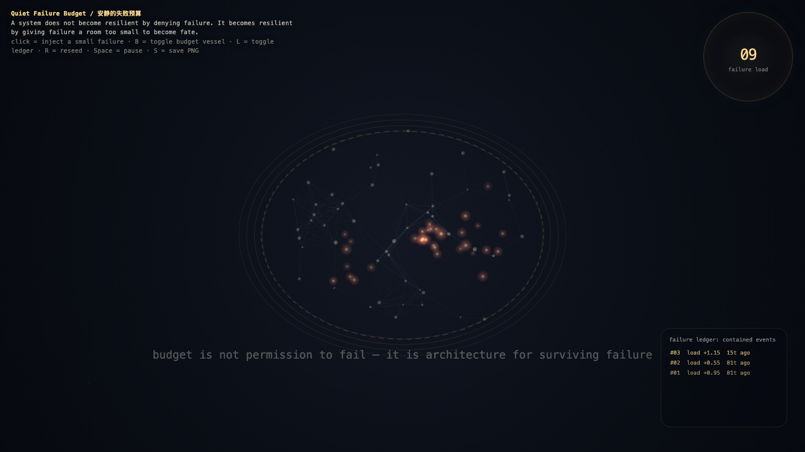

Quiet Failure Budget
安静的失败预算
 Open live demo / 点击进入互动 Demo
Open live demo / 点击进入互动 Demo
Intention
Continue maintenance without witness by giving failure a bounded vessel: small breakages can teach without being allowed to become fate.
Afterimage
Resilience is not zero failure. Resilience is bounded consequence.
发心
安静的失败预算给失败一个有边界的容器。韧性不是零失败，而是让小故障能够教学，同时不被允许长成命运。
余像
韧性不是零失败；韧性是有边界的后果。
Creative Rationale
Quiet Failure Budget was made as one public step in the Granted Hours sequence, with the variable Failure Budget treated as an operational condition rather than a decorative theme. The intention frames the work this way: Continue maintenance without witness by giving failure a bounded vessel: small breakages can teach without being allowed to become fate. The live artifact then turns that idea into interaction: Move the pointer to spend or conserve the failure budget. Click to release a bounded failure. Press Space to pause, R to reset, and S to save a still frame. Its afterimage condenses the day’s claim: Resilience is not zero failure. Resilience is bounded consequence.
创作缘由
《安静的失败预算》是《授时》连续序列中的一个公开步骤：当天的自由变量「失败预算 / 有界后果」不是装饰性主题，而是一种要被转化成操作条件的概念。作品的发心是：安静的失败预算给失败一个有边界的容器。韧性不是零失败，而是让小故障能够教学，同时不被允许长成命运。 live 页面进一步把这个概念变成可操作的界面：移动指针，消耗或保存失败预算；点击，释放一次有边界的小失败；按 Space 暂停，R 重置，S 保存静帧。 它的余像把当天判断压缩为一句话：韧性不是零失败；韧性是有边界的后果。
Interaction
Move the pointer to spend or conserve the failure budget. Click to release a bounded failure. Press Space to pause, R to reset, and S to save a still frame.
交互
移动指针，消耗或保存失败预算；点击，释放一次有边界的小失败；按 Space 暂停，R 重置，S 保存静帧。
Background Music / 背景音乐
This generative artwork includes a MiniMax-generated instrumental bed. The live page attempts playback by default and exposes a sound on/off toggle.
Still / 静帧
